← 返回阅读库 · 原论文目录
论文讲解阅读文档 · 机器人学 · v092
Efficient Action Tokenization for Vision-Language-Action Models[2501.09747]
视频时长 00:14:39；讲解文字 5,795 字符；提取讲解画面 89 张。按视频原顺序阅读，每段文字保留时间戳。
文字来自整段视频的自动语音转写，按自然停顿分段，并与 PPT / 论文页面 / 演示画面对齐。未将讲解压缩为摘要；术语、数字和口述公式请结合画面及原论文核对。 阅读稿已校正规范部分明确术语误识别；原始逐字稿和每处修改记录另行保留。
讲解画面为源视频截图（640×360），不是可编辑 PPT 文件。全片按每秒 2 帧扫描内容变化，逐步展开页保留；连续动画保留代表画面。清晰度受源视频限制。
下载完整资料包 · 含离线 HTML、PDF、Word、全部 PPT 画面和字幕。
原论文与材料
FAST: Efficient Action Tokenization for Vision-Language-Action Models · 下载完整 PDF（19 页）
按时间阅读
00:00:00–00:00:10 · 画面 001
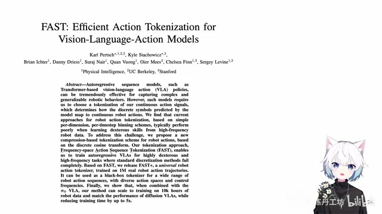
00:00:00–00:00:10 · 画面 001大家好，今天我们来快速说一篇论文，FASTEfficient Action Tokenization for Vision Language Action Models。这一篇你从标题就可以看出来，它是做了一个 tokenizer，专门给我们 VLA 用。为什么要单独针对它来发明一个 tokenizer？
00:00:10–00:00:11 · 画面 002
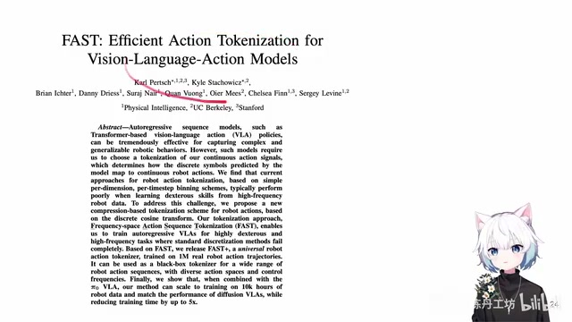
00:00:10–00:00:11 · 画面 00200:00:11–00:00:16 · 画面 003
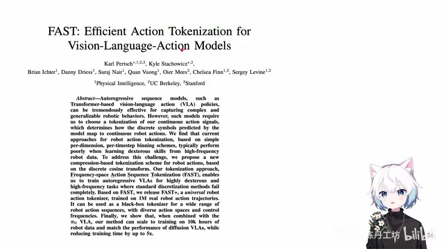
00:00:11–00:00:16 · 画面 00300:00:16–00:01:10 · 画面 004
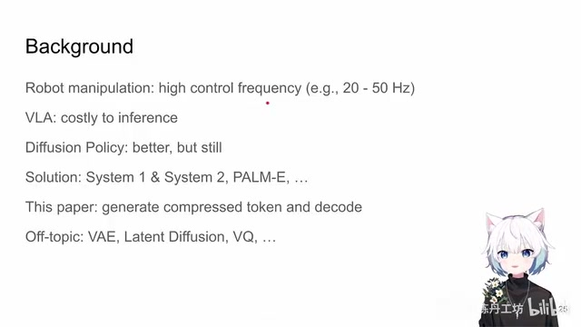
00:00:16–00:01:10 · 画面 004原因很简单，因为我们现在的机器人的控制任务一般的都是希望有一个很高的控制频率，比如说 20 甚至到 50 赫兹这样一个控制频率。但是你假如说用 RT2 用 OpenVLA 这种样子，你七八个 token 才能控制一针生成。这七八个 token 就费了老鼻子劲了。你还要他一秒钟做 50 甚至 20 次，这对我们算力的需求是非常大的。那当然你说有 Diffusion Policy 这种东西对吧，差稍微好一点，但是还是你推理的时候也是需要一遍一遍的去 Denoise。那当然这也催生出了一系列 System1 System2 对吧，一个高级的一个 Vision Language Model 这样一个控制器做规划，剩下的交给底层控制器去执行。本文呢就提出了一个新的 Tokenizer，他的思路呢就是帮我们压缩我们要生成的这个 Action。
那这样子呢，我们相当于用更少的 token 去生成更多的 action，这是本文的核心的意义。那么当然你很自然的就会联想到持有相关思路的这样的文章，比如说 VAEPaysonDiffusionVQVAE 这种东西对吧，都是我把一个相对信息比较稀疏的，就是或者说是信息冗余比较高的这样一个原始的数据给它压缩一下，精简一下，让我们的模型更好地去生成。
00:01:10–00:01:11 · 画面 005
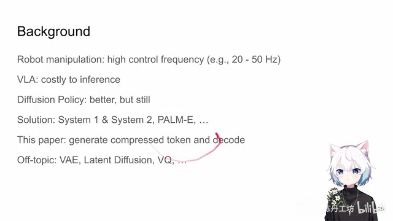
00:01:10–00:01:11 · 画面 00500:01:11–00:01:36 · 画面 006
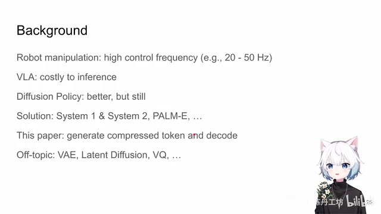
00:01:11–00:01:36 · 画面 006这是本文的一个背景。
00:01:36–00:01:37 · 画面 007
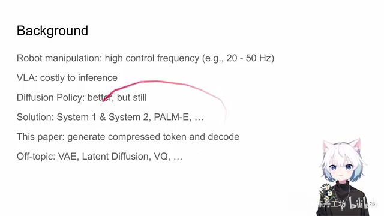
00:01:36–00:01:37 · 画面 007那么具体来看到他的这个问题的定义。
00:01:37–00:01:52 · 画面 008
00:01:37–00:01:52 · 画面 008那就是在我一个时间窗口内。我想发生 H 是个步骤。H 是个 action那么我们想要一种映射。能够把这样一个这个 dimension 乘以 H。这样一个 matrix给它变成 N 个离散的 token。
00:01:52–00:01:53 · 画面 009
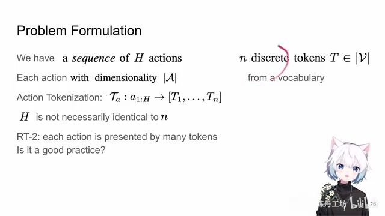
00:01:52–00:01:53 · 画面 00900:01:53–00:01:57 · 画面 010
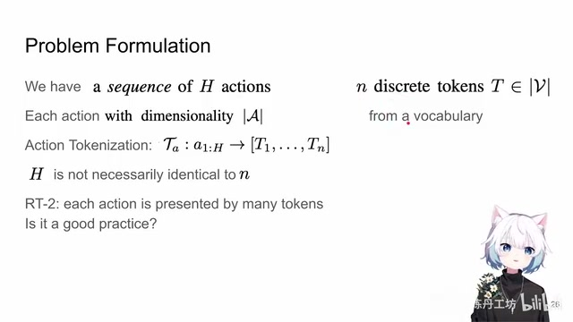
00:01:53–00:01:57 · 画面 010最好呢这个 token 还是在一个有限的一个词表里面。
00:01:57–00:01:58 · 画面 011
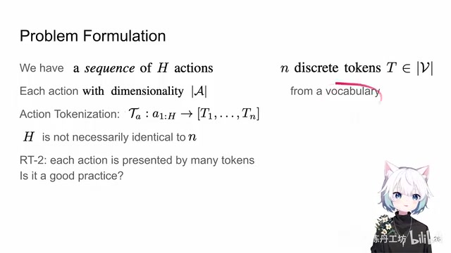
00:01:57–00:01:58 · 画面 01100:01:58–00:02:25 · 画面 012
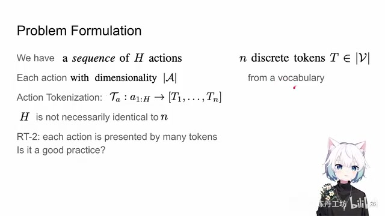
00:01:58–00:02:25 · 画面 012构建这样一种映射。那么当然最直接的一个方法。就像之前 GatoRT2 这样他们做的你这个 action 这个矩阵里面的每一个数。你就给它离散化然后量化成一个特定的离散的值就好了。但是呢它的缺点也很明显。你生成一个时刻的这个动作。你需要这么一大串 token 来做。它显然在计算上是不划算。那所以呢这里很自然的就想到。我能不能在这个映射的过程中。
00:02:25–00:02:27 · 画面 013
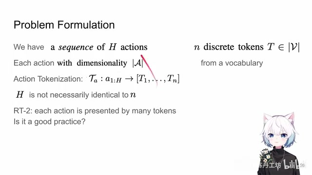
00:02:25–00:02:27 · 画面 01300:02:27–00:02:31 · 画面 014
00:02:27–00:02:31 · 画面 014引入一点压缩的手段。让我们这些原始的这个矩阵。
00:02:31–00:02:32 · 画面 015
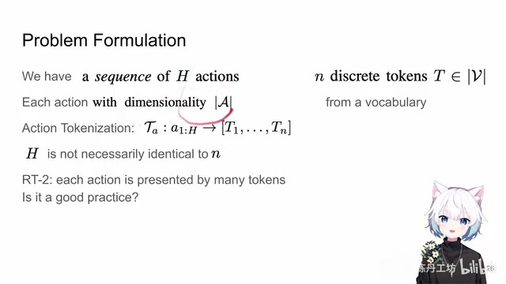
00:02:31–00:02:32 · 画面 015能够以较小的这个 token 的数量。
00:02:32–00:02:36 · 画面 016
00:02:32–00:02:36 · 画面 016去表现然后再还原出来主要的是用了这个 DCT。
00:02:36–00:02:57 · 画面 017
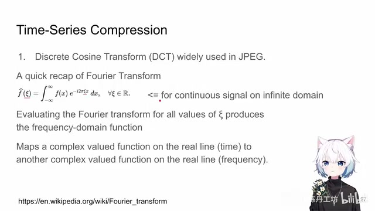
00:02:36–00:02:57 · 画面 017那简单回顾一下它的来源。对吧我们可以最早导到这个伏地叶变换开始。那么伏地叶变换是把一个定义在实数域上的复函数变成另一个定义的。实数域上的负函数，就是从一个实域到平域这样一个转换，同时呢它也是可逆的。那么当然这说的都是连续的信号。
00:02:57–00:03:24 · 画面 018
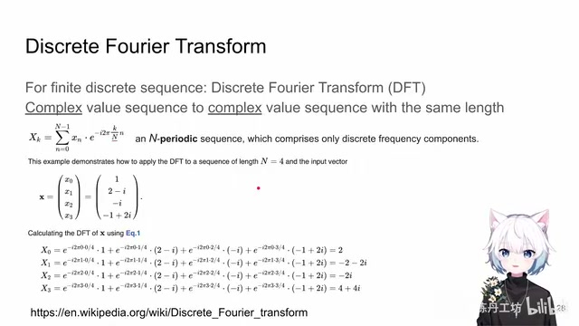
00:02:57–00:03:24 · 画面 018你如果把它变成离散的情况下，那么就是我有一个长度为 n 的这样一个复数的序列，那么我通过离散傅里叶变换把它变换成另一个长度为 n 的复数的序列，这些当然都是非常有用的。但是你注意到所有的这些傅里叶变换都是操作在复数域的，我不是一个新闻工作者，我是一个 engineer，我不太关心真空中的球形机，我只在乎一些实数那这个时候呢，就有了这个 dct。那首先，既然我们不关注负数了，我们就可以把这个序列中所有负数部分都拿到，以后我们只处理实数的序列。同时呢，你再观察到在这个变换过程中，它还是会有虚数的部分产生。那归根到底，我们看到欧拉公式这些虚数的部分，就是由这个 sin 这个部分产生的，cos 这个部分负责产生实数。为了让我们的变换结果全部为实数，我们能不能直接把这个 sin 这个部分拿掉呢？这个式子就退化成了这个样子。
00:03:24–00:03:35 · 画面 019
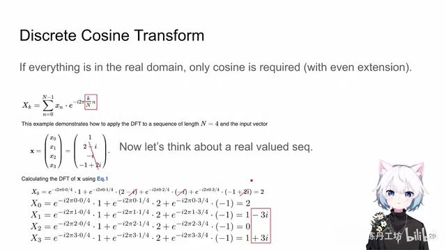
00:03:24–00:03:35 · 画面 01900:03:35–00:03:36 · 画面 020
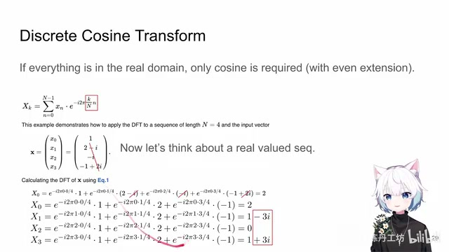
00:03:35–00:03:36 · 画面 02000:03:36–00:03:50 · 画面 021
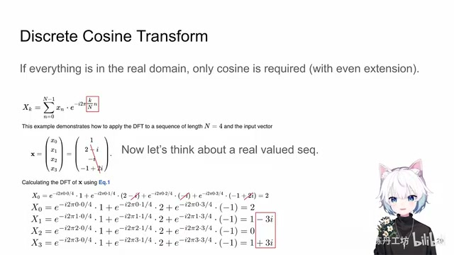
00:03:36–00:03:50 · 画面 02100:03:50–00:04:54 · 画面 022
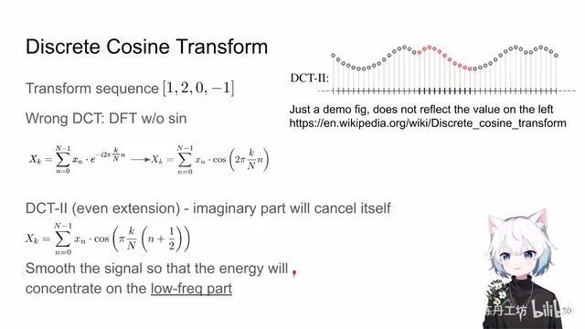
00:03:50–00:04:54 · 画面 022你也可以做，但是你如果直接这样做会丢失一些很好的性质，比如说你能变化之后的能量不再集中在低频的区域了，它不好压缩，为了让变化更加的平滑，同时让 sin 这个函数自己杀掉自己，所以这里就做一个 even extension，这是你原来的序列对吧，你给它镜像过来，然后你的序列的长度变成原来的两倍那这样的一个对称的序列，在你去做这个变化之后，就可以让它的这个虚部自然的消掉。同时呢，因为你的这个序列这个连接处对吧？
这些都是平滑的嘛，你的这个变换之后的函数更多的会关注你的这些低频的信号，这是一个非常好的性质。这只是一个非常粗略的 DCT2 是个什么东西。那么抛开所有的数学，就是我们希望有一个变换能够把一个实数的序列变换成另一个实数的序列。那么经过这个变换之后，因为这个信息集中了，我们就可以省略掉一些对这个实际信号重建。影响不大的一些部分。那么到这里呢，我们就可以直接看本文提出的这个方法的实现了。那它的一个大概的流程呢，就是你原始的这个 action 的这些数据，你要先过 normalization，然后呢做 dctdct 出来之后呢，就是那 dct 出来之后，dct 出来之后再去做一个量化，相当于在这一步呢，影响比较小的元素就给它设置成 0 了。
00:04:54–00:05:11 · 画面 023
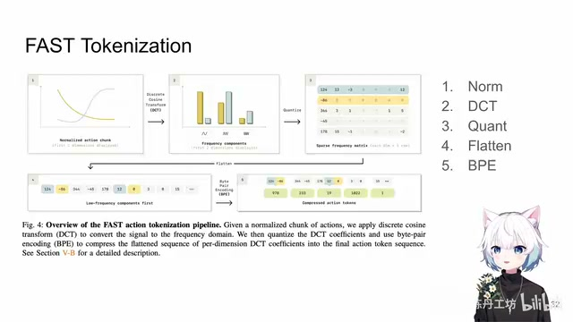
00:04:54–00:05:11 · 画面 02300:05:11–00:05:12 · 画面 024
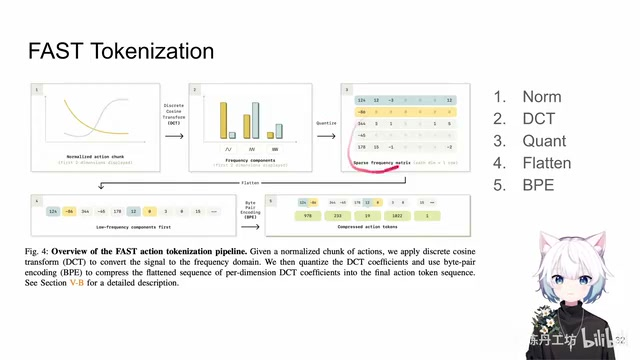
00:05:11–00:05:12 · 画面 02400:05:12–00:05:18 · 画面 025
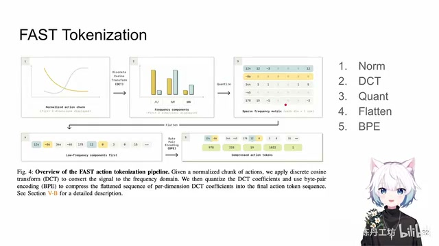
00:05:12–00:05:18 · 画面 025然后把它这样一个矩阵转换成一个序列，最后再单独训练一个 BPE，就是 byte pair encoding，把这个序列给它压缩短。这个就是本文的核心的思路。下面我们具体来看到的实现。首先 normalization，那么它就是用了数据集中 1%到 99%分位的这样的一些样本，就去掉了最低和最高的那 1%的数据，每一个 action 的 dimension 都是这样单独做一下。
00:05:18–00:05:19 · 画面 026
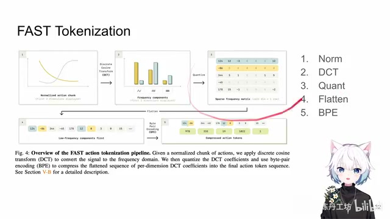
00:05:18–00:05:19 · 画面 02600:05:19–00:05:27 · 画面 027
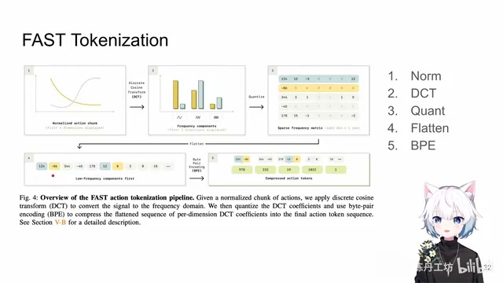
00:05:19–00:05:27 · 画面 02700:05:27–00:05:28 · 画面 028
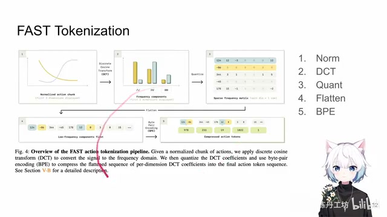
00:05:27–00:05:28 · 画面 02800:05:28–00:05:29 · 画面 029
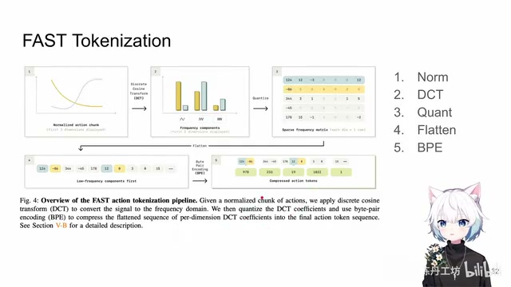
00:05:28–00:05:29 · 画面 02900:05:29–00:05:48 · 画面 030
00:05:29–00:05:48 · 画面 030然后把这样的数据 normalize 到-1 到 1，这是一个很标准的操作。但是这个去掉 1%和 99%是可以借鉴的。然后你就做 DCT。做完 DCT 之后的结果乘上一个γ，然后乘完之后把这个伏点数给它变成整数。这样子，你想假如说你原来。
00:05:48–00:05:50 · 画面 031
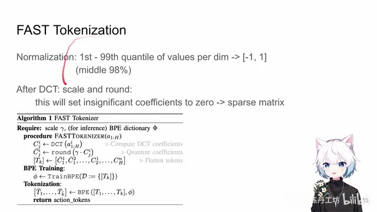
00:05:48–00:05:50 · 画面 03100:05:50–00:06:33 · 画面 032
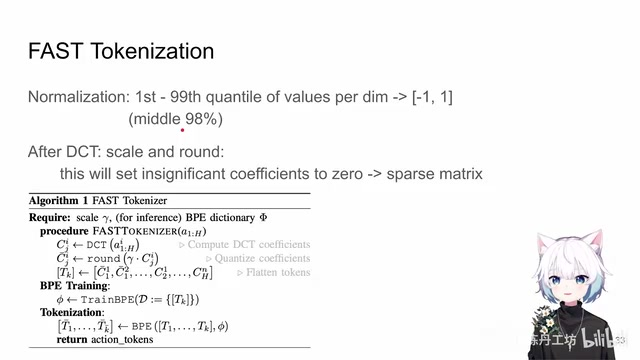
00:05:50–00:06:33 · 画面 032DCT 出来之后的这个值它呢是比较接近于 0 的哪怕你乘上了这个 scale 乘上这个γ之后它也是接近于 0 的那么这个时候这个因子经过量化之后它就变成 0 了那么假如说你变化过后的这个矩阵里面有很多这样的因子你最后形成的这个矩阵呢就是一个相对稀疏的矩阵要注意到这一步 DCT 过完之后它的这个矩阵的尺寸是没有变化的但是呢这个矩阵的数值肯定是稀疏了
00:06:33–00:06:37 · 画面 033
00:06:33–00:06:37 · 画面 033那么就得到这样一个矩阵，这里它的横轴就是从低频一直到高频，每一行就是一个 action，那纵了这个轴下来就是一个时刻 action 不同的 dimension，那么有了这样的一个矩阵之后，这里面现在都是整数了，然后我们就可以把它变成一个序列开始做 BPE 了，这里有个小的设计就是我们应该怎么样把二维的矩阵展成一个序列是应该
00:06:37–00:06:39 · 画面 034
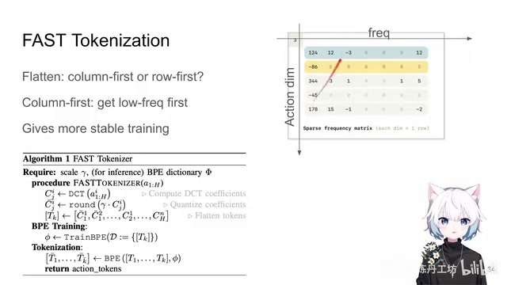
00:06:37–00:06:39 · 画面 03400:06:39–00:06:43 · 画面 035
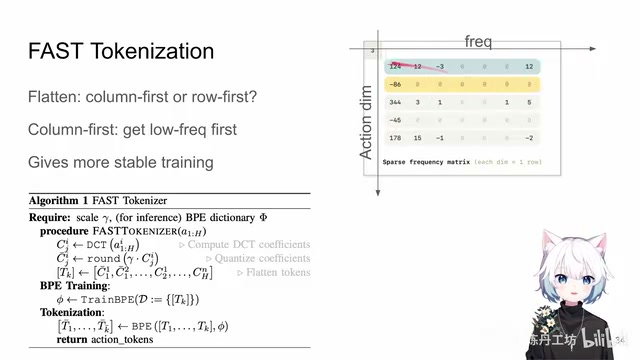
00:06:39–00:06:43 · 画面 03500:06:43–00:06:47 · 画面 036
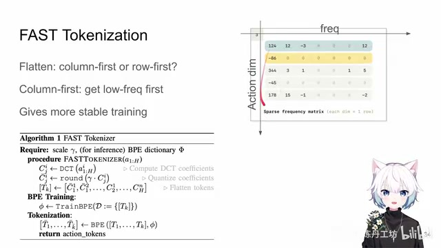
00:06:43–00:06:47 · 画面 03600:06:47–00:06:54 · 画面 037
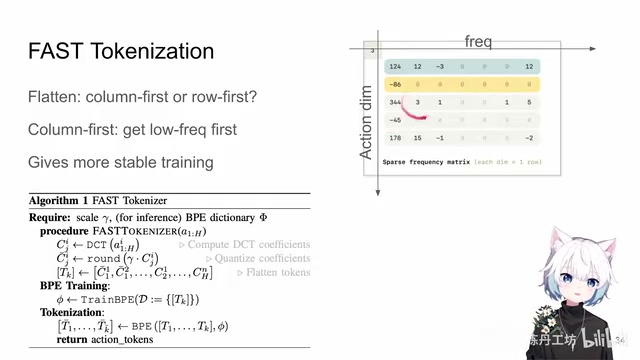
00:06:47–00:06:54 · 画面 03700:06:54–00:06:55 · 画面 038
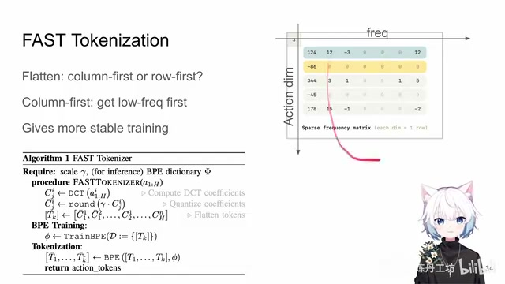
00:06:54–00:06:55 · 画面 03800:06:55–00:07:05 · 画面 039
00:06:55–00:07:05 · 画面 039横着这样一行一行的接起来，还是竖着一行行接起来呢？啊，要竖着接，这也就意味着形成的这个 sequence 是取的每个 actionDimension 第一个低频的数据。啊，所有的低频数据都走完了。好，然后呢下个序列是第二低频的数据再走。
00:07:05–00:07:07 · 画面 040
00:07:05–00:07:07 · 画面 04000:07:07–00:07:32 · 画面 041
00:07:07–00:07:32 · 画面 041然后第三个低频就这样这样排下去。就是频率是一个从低到高这样一个过程。那当然它也是很符合直觉的。那是说你的低频是还有能量最多的。再结合上 auto regress 有生成这样一个特点。对吧你肯定希望先生成最重要的部分。然后呢再逐渐生成不那么重要的部分。
00:07:32–00:07:34 · 画面 042
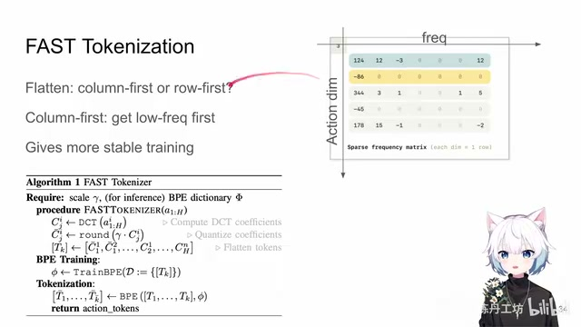
00:07:32–00:07:34 · 画面 042那经过这样的展开之后呢。
00:07:34–00:07:36 · 画面 043
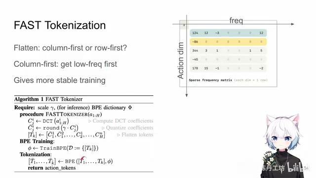
00:07:34–00:07:36 · 画面 043我们就要开始训练一个 BPE tokenize。
00:07:36–00:07:43 · 画面 044
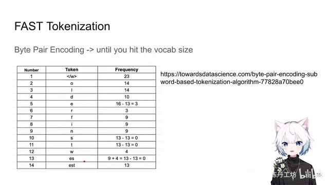
00:07:36–00:07:43 · 画面 044那当然这个方法本身也没有什么特别的。这里我们还是快速的过一下。那比如说在这个例子里面。就是一开始我有这么 12 个字母。
00:07:43–00:07:44 · 画面 045
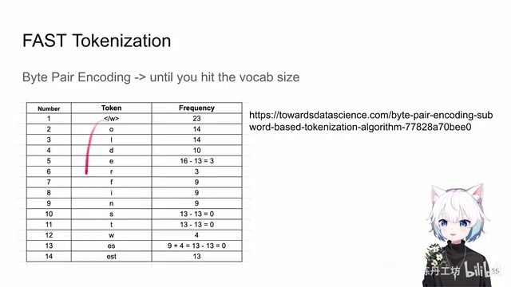
00:07:43–00:07:44 · 画面 045我统计一下它们出现的次数。
00:07:44–00:07:49 · 画面 046
00:07:44–00:07:49 · 画面 046那么当然换到本文 fast 的这个情况。就是我有 12 个不同的离散的值。
00:07:49–00:07:50 · 画面 047
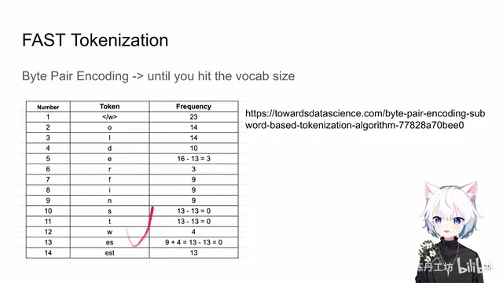
00:07:49–00:07:50 · 画面 047就是经过你的 DCT 经过量化之后剩下来的 12 个值
00:07:50–00:08:24 · 画面 048
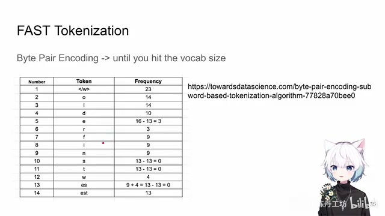
00:07:50–00:08:24 · 画面 048那么然后呢我们去统计另一个事情就是两个字符相邻出现的次数那这个时候呢经过一番统计下来发现 E 和 S 这两个字母它们经常一块出现有 13 次在一起是所有的两两字符中出现的频率最高的一个这个组合就可以被我们吸收的一个数据到我们的词典里面那么统计一下这个组合一共出现了 13 次这里想象 13那相应的你的 E 和 S 它们出现的次数就减少了 13 次因为它们都被吸到了这个 yes 里面
00:08:24–00:08:25 · 画面 049
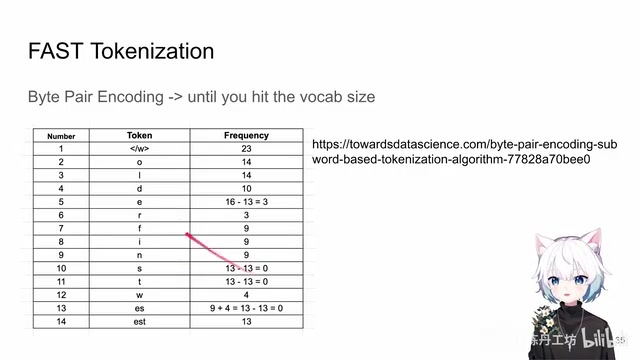
00:08:24–00:08:25 · 画面 04900:08:25–00:08:46 · 画面 050
00:08:25–00:08:46 · 画面 050这是一步那么有了这个之后你的每个词的表示也要更新一下了你的一个词里面当出现 E 和 S 这两个字母相邻的时候你不再是用两个单独的这个字母去描述它而是直接用这样一个新的词语去描述它那所以的呢你这个 E 的出现的次数就减少了 13 次S 出现的次数减少 13 次对吧
00:08:46–00:08:47 · 画面 051
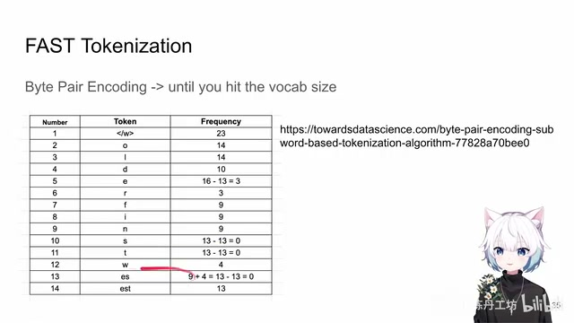
00:08:46–00:08:47 · 画面 051因为你可以用 ES 来代替
00:08:47–00:09:29 · 画面 052
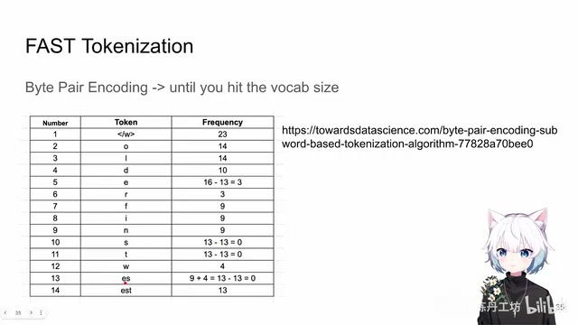
00:08:47–00:09:29 · 画面 052那过完这一轮之后你再同样的去做统计它们相邻的两个 token 出现的次数统计下出现次数最高的那两个最常带在一起发现是 ES 和 t它俩最常带在一起那正好都是出现了 13 次所以呢我们就可以再介绍一个新的词语EST它的出现次数是 13 次那么就把 ES 和 t 再减去 13这样子呢就得到了一个新词长此以往呢你可以不断继续做做做直到你的词表的数量达到了你设计的一个上限你就觉得啊我对这个字典非常满意好那么这是一个非常简略的 BPE 的思路，就是在这一步我们把 token 的数量从原来的一个位置一个 token 就压缩，因为我们可以发明一个新的 token 去代表一系列的 token，那么学出来这个 tokenizer 就是我们最终想要的 tokenizer。那么你看到整个算法里面我们真正涉及到需要调整的超弹数有哪些，一个就是我一开始做量化的时候，我 DCT 做完之后放大多少倍
00:09:29–00:09:43 · 画面 053
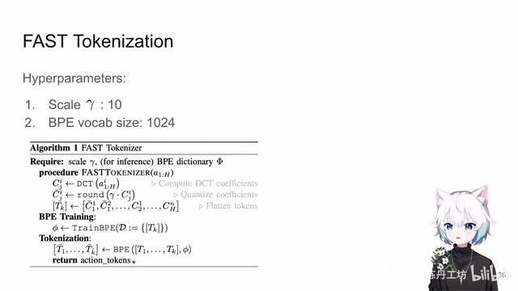
00:09:29–00:09:43 · 画面 05300:09:43–00:09:44 · 画面 054
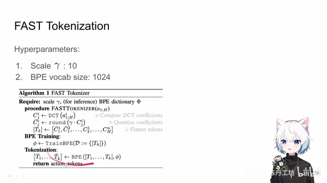
00:09:43–00:09:44 · 画面 05400:09:44–00:09:57 · 画面 055
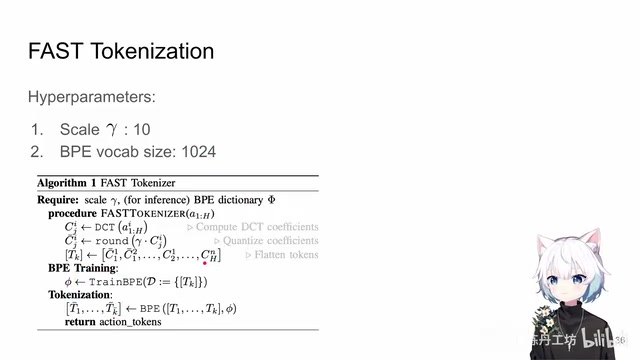
00:09:44–00:09:57 · 画面 055再去座量化还有你 BPE 要学多少个一共要学多少个单词那么然后就可以来到实验部分了
00:09:57–00:10:03 · 画面 056
00:09:57–00:10:03 · 画面 056最开始做了一个非常简单的实验对吧用 language model 去 fit 这样一个曲线
00:10:03–00:10:05 · 画面 057
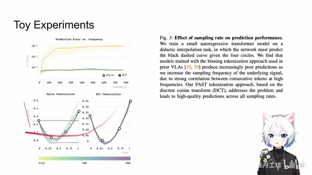
00:10:03–00:10:05 · 画面 057我非常怀疑这个地方它的标记写错了
00:10:05–00:10:13 · 画面 058
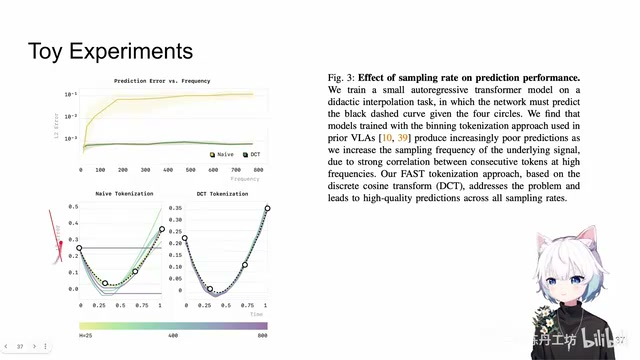
00:10:05–00:10:13 · 画面 058这应该就是曲线的值它是去 fit黑色的虚线不同的颜色代表着我在曲线上采样的不同的频率
00:10:13–00:10:14 · 画面 059
00:10:13–00:10:14 · 画面 05900:10:14–00:10:26 · 画面 060
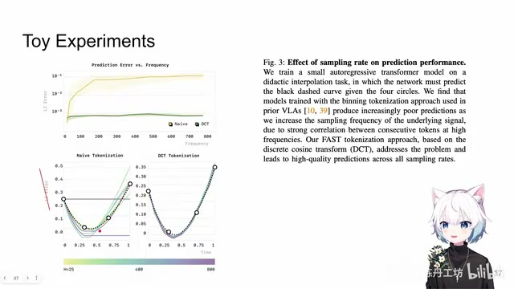
00:10:14–00:10:26 · 画面 060对吧比如说我这一份可以 25 等分甚至到最后 800 等分我用不同的 tokenizer把这样的序列去变成 token我去吹一个小的 transformer去拟合这样的一个曲线
00:10:26–00:10:28 · 画面 061
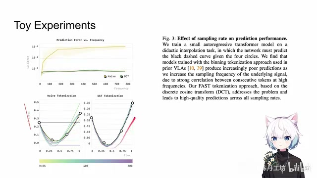
00:10:26–00:10:28 · 画面 061那怎么样发现特别是到高频的时候
00:10:28–00:10:47 · 画面 062
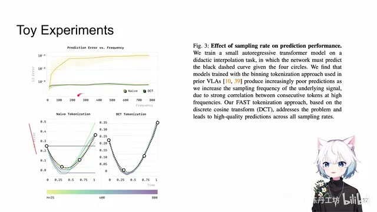
00:10:28–00:10:47 · 画面 062原来你直接是直接把这个数值拿过来量化这样的一个方法就失效了因为你最后生成的序列会很长所以你看到它的这个时候它的预测的误差就一直很大而你用了本文带 DCT 的这些东西之后它的预测的误差就可以控制的很小就像这样子
00:10:47–00:10:48 · 画面 063
00:10:47–00:10:48 · 画面 06300:10:48–00:10:51 · 画面 064
00:10:48–00:10:51 · 画面 064这个是一个非常简单的实验，当然你最终做实验还是要落到真正的机器人上去，真正的训练一个 VLA 来做，作者选了两个 backbone，一个是 OpenVLA，我们之前说了一个是派 0，我们说不了，他们要做的都是在一秒的时间内的一个动作的序列，那么经过通风奶子变成词语之后，它是重用了 VLM 里面最少被使用的这些 token 的意义
00:10:51–00:11:19 · 画面 065
00:10:51–00:11:19 · 画面 065作者吹了两种 Fast 标准的 Fast 就是只用了我们右侧的这些 7 个实际用来评测的这样的数据，用它们来作为你的数据集来去训练一个 Tokenizer，那么还有一个版本的是 Fast Plus，也就是把它能搜罗到的所有的数据都拿过来去训练这样一个 Tokenizer
00:11:19–00:11:20 · 画面 066
00:11:19–00:11:20 · 画面 06600:11:20–00:11:27 · 画面 067
00:11:20–00:11:27 · 画面 06700:11:27–00:11:28 · 画面 068
00:11:27–00:11:28 · 画面 06800:11:28–00:11:49 · 画面 069
00:11:28–00:11:49 · 画面 069同时这里作者还有一些其他的对比，就是我直接从这种原始的信息，我不使用 DCT，直接从原始的数值的这些 action 去学一个离散的表达，比如说 FSQ VQVAE 这种东西，我们之前也都介绍过了，直接用这样的一个东西来表达来学一个 tokenizer 效果怎么样对吧，这是它的 baseline，那么下面我们来看到作者的结果，首先就是压缩的比例
00:11:49–00:11:53 · 画面 070
00:11:49–00:11:53 · 画面 07000:11:53–00:11:57 · 画面 071
00:11:53–00:11:57 · 画面 07100:11:57–00:12:15 · 画面 072
00:11:57–00:12:15 · 画面 072你直接用 rt2 这样子的 token 的数量对吧，就是 dimension 乘以这个 control frequency 就是这样的值和对比，你用这个 fast 它的这个 token 的数量压缩的比例是很明显的，还有这里呢，这个实验是用 fast plus 训练好之后在这些数据集上测测了这个压缩的比例相对于这个直接去编码它的压缩的比例，首先就是证明说那 fast 这个东西它通过 BPE 是很好的把这个 token 的数量给它压缩下来了
00:12:15–00:12:16 · 画面 073
00:12:15–00:12:16 · 画面 07300:12:16–00:12:30 · 画面 074
00:12:16–00:12:30 · 画面 07400:12:30–00:12:31 · 画面 075
00:12:30–00:12:31 · 画面 075这是第一个，那么第二个就是压缩好的这个 token 他拿过来确实能够帮助我们去学一个好的 policy 对吧，OpenVLA 在折 T 恤的这样一个任务上
00:12:31–00:12:37 · 画面 076
00:12:31–00:12:37 · 画面 07600:12:37–00:12:38 · 画面 077
00:12:37–00:12:38 · 画面 07700:12:38–00:12:45 · 画面 078
00:12:38–00:12:45 · 画面 078提升，然后发现 BPE 对我们的成功的影响也是很大的，那么这组实验就是我在单个任务上训练派里重点在于，因为他的 token 的数量变少了，我们可以更快更高效的去训练，但是我们注意到因为我们的 VLA 还是网络还是太庞大了，相比于一个 Diffusion Policy 来说它还是太庞大了
00:12:45–00:12:46 · 画面 079
00:12:45–00:12:46 · 画面 07900:12:46–00:12:49 · 画面 080
00:12:46–00:12:49 · 画面 08000:12:49–00:13:19 · 画面 081
00:12:49–00:13:19 · 画面 081你直接去做推理用 vla 去生成 autoregressive 去生成这样的控制的 token 比起你用 diffusion 去做 denoising 生成的 token 它的享用的速度还是慢的当然这也不是一个严格的 head to head 这样一个比较，那么最后还有多任务上的学习，这个是 Fast 加π0 和 Diffusion π0 的对比，这些数据看看就行了，还有这个图各个任务上性能的对比，对比的之前的一些 baseline 对吧，我至今不知道它这个图里面用的是什么 backbone，具体的上面的数值是多少一概不清楚，总的来说这篇文章就是用 DCT 把 11 个信号转成频域信号让我们的 BPE
00:13:19–00:13:25 · 画面 082
00:13:19–00:13:25 · 画面 08200:13:25–00:13:26 · 画面 083
00:13:25–00:13:26 · 画面 08300:13:26–00:13:32 · 画面 084
00:13:26–00:13:32 · 画面 08400:13:32–00:13:35 · 画面 085
00:13:32–00:13:35 · 画面 08500:13:35–00:13:49 · 画面 086
00:13:35–00:13:49 · 画面 086能够更好去压缩序列的长度，能够达到更快的训练这个思路还是没什么问题的，但是这篇文章的图我非常不喜欢，没有单独的表格把图里的数据都摘出来，主打一个全让你去目测。这个阴影加的也是根本没有必要加这个东西，而且只会让读者更加迷惑。当然我估计他也不太指望有任何作者会尝试去复刻或者说是超过他性能，这又是机器人学魅力时刻了。所以这篇文章我觉得还是从思路上学习一下就可以了
00:13:49–00:13:50 · 画面 087
00:13:49–00:13:50 · 画面 08700:13:50–00:14:39 · 画面 088
00:13:50–00:14:39 · 画面 088好的，那么以上就是我对这篇文章的一个非常快速的整理。那么这个文章还有一些实验和附录部分我没有涉及到，感兴趣的朋友非常推荐你到原文查看。那么当然今天这个时间也比较特殊，在这个时间发视频也是我们频道的惯例了。那在这里祝各位有节日过的朋友们春节愉快，阖家欢乐。那么还有像我这样子的没有节日过的朋友们，这个视频就是录给你的。好的，那么感谢您的收看，请多多指点
00:14:39–00:14:39 · 画面 089
00:14:39–00:14:39 · 画面 089转写与来源说明 · 17 个自动复核提示
保留 163 个原始语音片段，17 个片段触发自动复核提示。提示仅用于定位可能的术语、重复或识别问题，不等于已确认错误。
讲解画面为源视频截图（640×360），不是可编辑 PPT 文件。全片按每秒 2 帧扫描内容变化，逐步展开页保留；连续动画保留代表画面。清晰度受源视频限制。
原视频：paper/合集_2026-10-16_机器人学/Efficient Action Tokenization for Vision-Language-Action Models[2501.09747].mp4
SHA-256：6a9334ecb2abf6e7a2f455a2130a758d30035f77fad2b958fae038540b33c8b9
这是本文的一个背景。
那么具体来看到他的这个问题的定义。
那就是在我一个时间窗口内。
我想发生 H 是个步骤。
H 是个 action
那么我们想要一种映射。
能够把这样一个这个 dimension 乘以 H。
这样一个 matrix
给它变成 N 个离散的 token。
最好呢
这个 token 还是在一个有限的一个词表里面。
构建这样一种映射。
那么当然最直接的一个方法。
就像之前 GatoRT2 这样
他们做的
的一个数据
好
全文按视频语音与画面制作。原论文可从上方链接下载；完整资料包保留全文、原始逐字稿、字幕和校对记录。